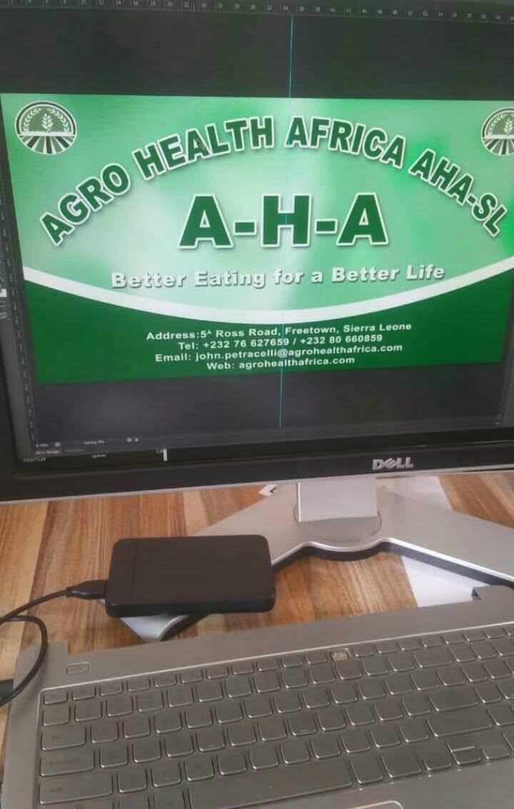

Local understanding
Solutions grounded in Sierra Leone’s agricultural context.
Agro-Health Africa – Sierra Leone brings professional expertise and local understanding together to develop practical, sustainable agribusiness solutions.

Agro-Health Africa – Sierra Leone was established in 2016 by professionals from diverse backgrounds who share a commitment to advancing Africa through responsible agribusiness ventures.
The organisation combines knowledge of the African continent with expertise and experience in crop production, water management and post-harvest crop management. This multidisciplinary foundation is an important asset to its operations in Sierra Leone.
Solutions grounded in Sierra Leone’s agricultural context.
Knowledge drawn from diverse professional disciplines.
Long-term thinking across the agricultural value chain.
Our work connects production, natural-resource management and post-harvest performance to strengthen agricultural enterprises and food systems.
Support for production planning, sustainable cultivation, crop management and improved farm performance.
Discuss this service →Practical approaches to water access, responsible use and resilience within agricultural operations.
Discuss this service →Better handling, storage and loss-reduction systems that protect crop quality and market value.
Discuss this service →Commercially informed support that connects agricultural ideas with viable, sustainable business models.
Discuss this service →Knowledge sharing and practical guidance for farmers, teams, partners and agricultural enterprises.
Discuss this service →Resource-conscious methods that support productivity, resilience and responsible growth.
Discuss this service →We connect professional knowledge, agricultural realities and stakeholder collaboration to shape solutions that can work in practice and grow over time.
Start a conversationStudy the context, need and opportunity.
Create a relevant and practical solution.
Work with partners to implement effectively.
Review results and improve performance.
Reach our Sierra Leone office for partnership discussions, agricultural projects and general enquiries.